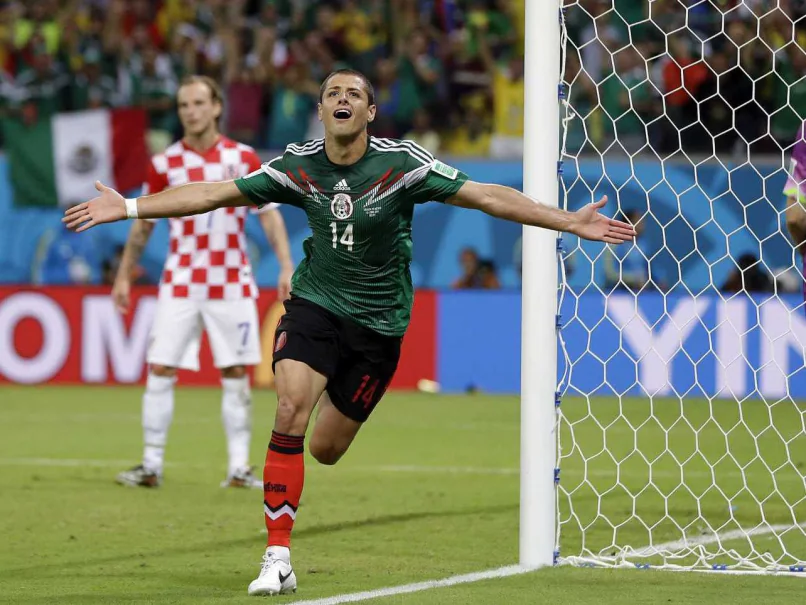

Welcome to the First Edition
Welcome to the first edition of Working at Full Capacity, brought to you by the new kids on the block. As you can see, our daily schedules are absolutely packed to the brim with eLearns, which is why we have spent hours meticulously designing this newsletter instead of doing any actual work.
Consider this your official tournament survival guide. We will break everything down simply so that even if you think a “winger” is just a spicy piece of chicken, you can still follow along and track your chances in the sweepstakes.
We have lots of good ideas for the weeks ahead so don’t be alarmed if this looks a bit “work-in-progress” right now.
But for now, let's play football!
💸 The Sweepstakes Reality Check
Everyone has received their teams by now, so let’s be entirely honest about where your money went.
If you drew Argentina, France, or Spain, congratulations — you have a genuine chance at glory.
If you are stuck with England, expect a month of boring football before they inevitably choke on penalties. If you got Portugal, prepare for a 41-year-old Cristiano Ronaldo screaming at his teammates while hitting free kicks straight into the wall. Germany will likely book an early flight home, and Belgium's “dark horse” era is now officially a senior citizen.
For those who don't see their team...
We thank you for your kind donation to the prize pool 💸🤑💰. There's always the next sweepstake in 4 years!
🕵️ Sweepstake Steward’s Inquiry
It seems that the formation of the sweepstake has been called into question by many members of the team. There was heartbreak for Bernard after he was told he got France and subsequently discovered this was not the case. I believe he was told it was an “iterative development”, to which he replied, “Biggest load of garlic I've ever heard”. Nonetheless, at least all teams selected are actually in the competition. We certainly can’t complain having landed two of the favourites ourselves.
🇲🇽 Nation Spotlight: Mexico

Famous Footballer: Javier “Chicharito” Hernández — Mexico’s all-time top scorer and a national icon.
National Dish: Tacos — elite, versatile, and universally capable of improving morale. Personally, we both love Mexican food.
One Weird Fact: Mexico City is slowly sinking. Because the massive metropolis was built on top of the ancient lakebed of Lake Texcoco, the spongy clay beneath it compresses as groundwater is continuously pumped out, causing the city to drop by as much as 10 to 20 inches every year.
Spirit of Choice: Tequila — Mexico’s world-famous spirit, best enjoyed with salt, lime, and absolutely no tactical analysis. (One of us is a margarita stan 🕺)
Chances at the World Cup: ⭐⭐⭐⬛⬛
📆 The Key Dates!
| Event | Dates |
|---|---|
| Group stage | June 11 - 27 |
| Round of 32 | June 28 - July 3 |
| Round of 16 | July 4 - 7 |
| Quarter-finals | July 9 - 11 |
| Semi-finals | July 14 - 15 |
| Third-place play-off ('Bronze final') | July 18 |
| Final | July 19 |
| Love Island Final 🥳🎉🥳🎉🥳🎉 | July 27 |
🔁 The Deja Vu Opener
The tournament kicks off tonight with Mexico taking on South Africa. If this feels familiar, it’s because it is a literal copy-paste of the 2010 opening match. FIFA has a multibillion-dollar budget but apparently ran out of script ideas for day one.
💬 Quote of the Week
“It’s just a big day, and it’s a great sport, and it really is coming to America and never -- nobody ever thought a thing like this could happen!”
— Donald Trump, 2026
No one thought what would happen? The World Cup in North America? I mean, the men’s World Cup was in the U.S. in 1994. And the women’s World Cup was in the U.S. in 1999 and 2003. This guy man 🤦♂️
💼 iPower Codes
Watching Matches in the Office — 31002026/T001
Checking your sweepstake team’s results — 31002026/T002
Reading the Weekly World Cup Newsletter — 31002026/T067
Also, could anyone let us know what the iPower code for writing the weekly World Cup bulletin is??
🧠 Trivia
Whoever answers these questions the quickest every week will receive a prize*! 🎁
- What country is famous for samba, skill and more World Cups than anyone else?
- What team does Fitzy (Sean Fitzgerald) play for?
- What part of the TCA 1997 deals with the R&D tax credit?
Please answer with integrity and honesty... “they'll never know” (ChatPwC)
*prize TBD
🏀 Side Note
Go Knicks!!! Don’t know if there are any basketball fans here but either way it's hard to ignore the enthusiasm and passion of the Knicks fan base.
❤️ Final Whistle
Please bear with us as we go from week to week. We are constantly working on new ideas and would love to hear your feedback!